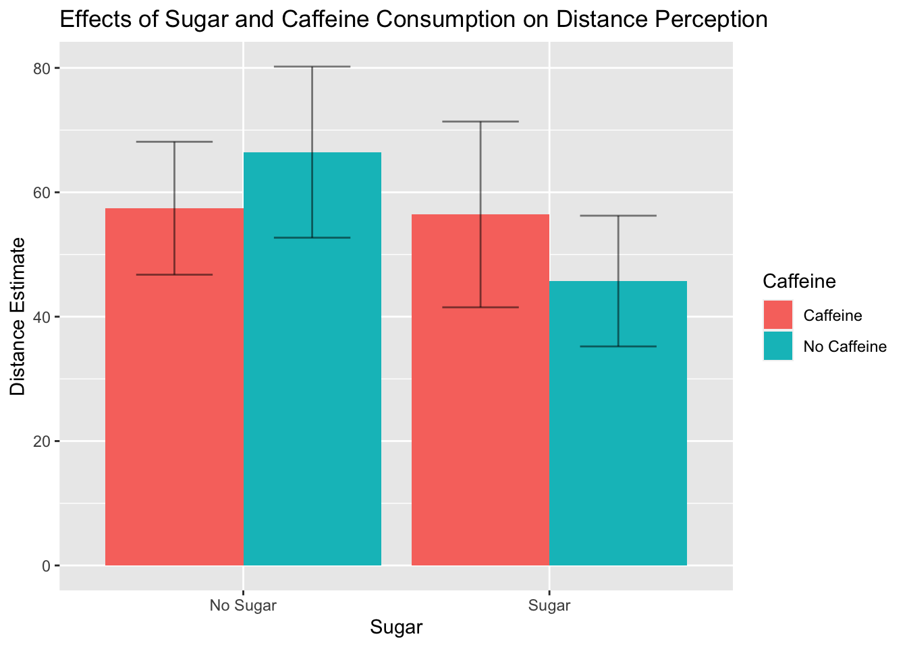
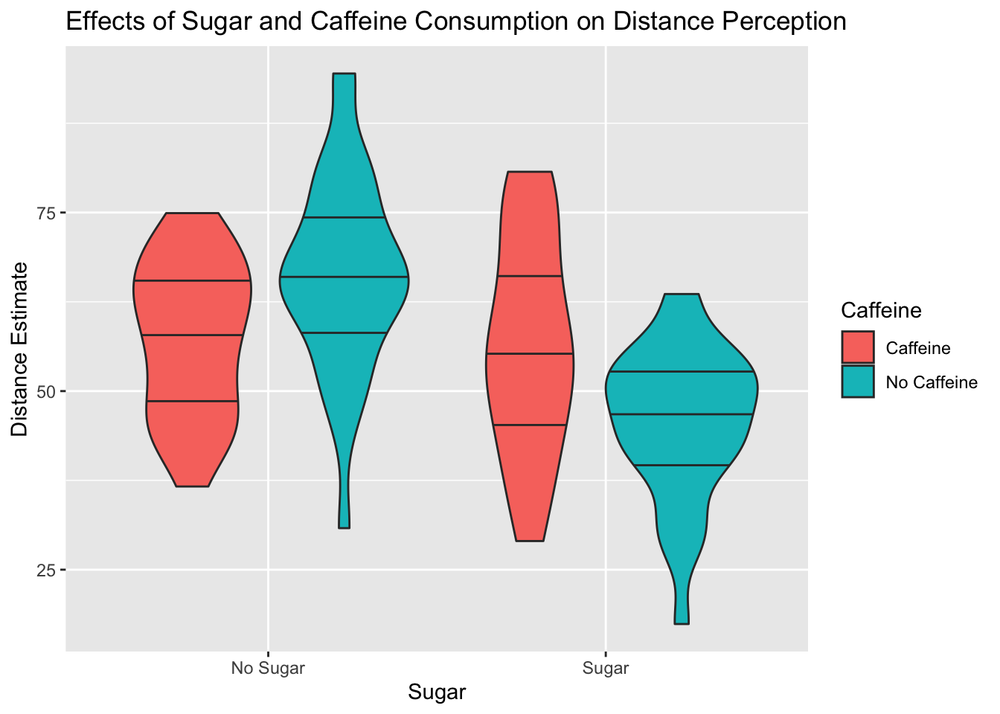

The goal of this portfolio is to generate some data for my 312 students’ final paper project.
Essentially, the students were given a scenario in which they are researchers interested in the effect of physical resource depletion on perceptions of distance. The idea is that objects will feel further away if people’s resources are depleted, and they’ll feel closer if their resources are replenished. We’re interested in manipulating physical resources by having participants wear a heavy backpack and then giving them a beverage (in this case, a soda) that varies in two respects: whether it contains sugar or artificial sweetener, and whether or not in contains caffeine. After wearing their backpack and drinking their drink, participants will be taken into a hallway and shown an object that is 50 ft. away. The dependent variable is their judgement of how far away that object is.
Therefore, what I ultimately want to generate is a dataset with four columns: 1.) participant ID, 2.) sugar vs. artificial sweetener, 3.) caffeine vs. caffeine free 4.) distance judgement.
Let’s load what we need:
library(tidyverse)## ── Attaching packages ─────────────────────────────────────── tidyverse 1.3.2 ──
## ✔ ggplot2 3.4.0 ✔ purrr 1.0.1
## ✔ tibble 3.1.8 ✔ dplyr 1.0.10
## ✔ tidyr 1.3.0 ✔ stringr 1.5.0
## ✔ readr 2.1.3 ✔ forcats 0.5.2
## ── Conflicts ────────────────────────────────────────── tidyverse_conflicts() ──
## ✖ dplyr::filter() masks stats::filter()
## ✖ dplyr::lag() masks stats::lag()library(ggpubr)
library(rstatix)##
## Attaching package: 'rstatix'
##
## The following object is masked from 'package:stats':
##
## filterlibrary(haven)Next I need to decide how I want the data to come out. I want there to be a main effect of sugar, no main effect of caffeine, and an interaction such that the effect of sugar is stronger with caffeine than without. That means picking cell means that give me that pattern. I’ll be able to tweak this after the fact if we need to, but lets just start with the following means:
No sugar, no caffeine: 55ft (SD = 3ft) No sugar, caffeine: 65ft (SD = 2.5ft) Sugar, no caffeine: 52 ft (SD = 3ft) Sugar, caffeine: 49 ft (SD = 2 ft)
We can start by creating the dataframe and the participant ID variable:
ID <- c(1:120)
data <- data.frame(ID)We can then assign the caffeine and sugar variables:
data <- data %>%
mutate(sugar = case_when(ID <= 60 ~ 0,
ID > 60 ~ 1),
caffeine = case_when(ID <=30 ~ 0,
ID > 30 & ID <= 60 ~ 1,
ID > 60 & ID <=90 ~ 0,
ID > 90 ~ 1)
)And finally we can add our random variables:
random <- c(rnorm(30, mean = 55, sd = 10),
rnorm(30, mean = 65, sd = 12),
rnorm(30, mean = 52, sd = 14),
rnorm(30, mean = 49, sd = 9))
data <- data %>%
mutate(distance_estimate = random)And just like that we have our data! I’ve saved the data manually so that when you run the subsequent steps of this code, you’ll see what I’m seeing and not whatever the randomization generates for you. Note that this means the data frame you just generated won’t match with the data we’ll be using from here on out.
Let’s check our data out to make sure we have what we were aiming for. First lets run our ANOVA:
#load data
data2 <- read_sav("/Users/lawilson1999/Desktop/Data Science Spring 2023/Portfolio/p04/backpack_data_sectionB.sav")
#run ANOVA
anova <- aov(distance_estimate ~ sugar*caffeine, data = data)
summary(anova)## Df Sum Sq Mean Sq F value Pr(>F)
## sugar 1 3796 3796 29.200 3.53e-07 ***
## caffeine 1 775 775 5.959 0.016151 *
## sugar:caffeine 1 1945 1945 14.958 0.000182 ***
## Residuals 116 15080 130
## ---
## Signif. codes: 0 '***' 0.001 '**' 0.01 '*' 0.05 '.' 0.1 ' ' 1This is what we wanted: a main effect of sugar and an interaction, but no main effect of caffeine.
Let’s also make a visualization to check our data:
#Make descriptives
descriptives <- data2 %>%
group_by(sugar, caffeine) %>%
summarize(mean_est = mean(distance_estimate),
sd_est = sd(distance_estimate))## `summarise()` has grouped output by 'sugar'. You can override using the
## `.groups` argument.ggplot(data = descriptives,
mapping = aes(x = factor(sugar),
y = mean_est,
fill = factor(caffeine))) +
geom_col(position = "dodge") +
geom_errorbar(position = position_dodge(width = 0.9),
alpha = 0.5,
width = 0.5,
mapping = aes(y = mean_est,
ymin = mean_est - sd_est,
ymax = mean_est + sd_est))+
scale_fill_discrete(labels = c('Caffeine', 'No Caffeine'))+
scale_x_discrete(labels = c('No Sugar', 'Sugar')) +
labs(title = "Effects of Sugar and Caffeine Consumption on Distance Perception",
x = "Sugar",
y = "Distance Estimate",
fill = "Caffeine")
This looks good! Let’s throw out another visualization just for fun:
ggplot(data = data2,
mapping = aes(x = factor(sugar),
y = distance_estimate,
fill = factor(caffeine))) +
geom_violin(draw_quantiles = c(0.25, 0.5, 0.75)) +
scale_fill_discrete(labels = c('Caffeine', 'No Caffeine'))+
scale_x_discrete(labels = c('No Sugar', 'Sugar')) +
labs(title = "Effects of Sugar and Caffeine Consumption on Distance Perception",
x = "Sugar",
y = "Distance Estimate",
fill = "Caffeine")